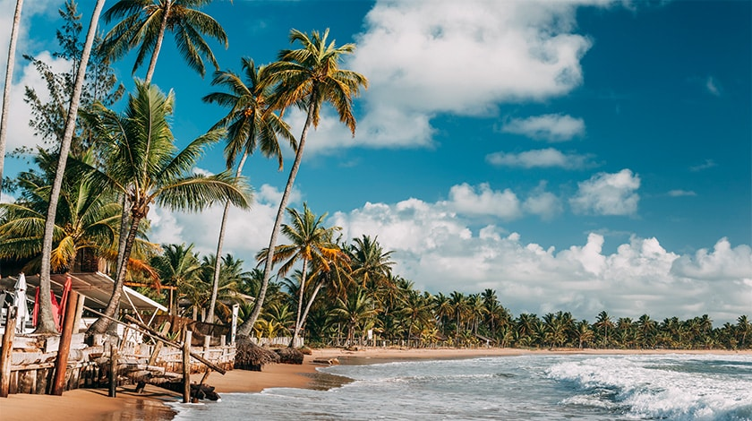
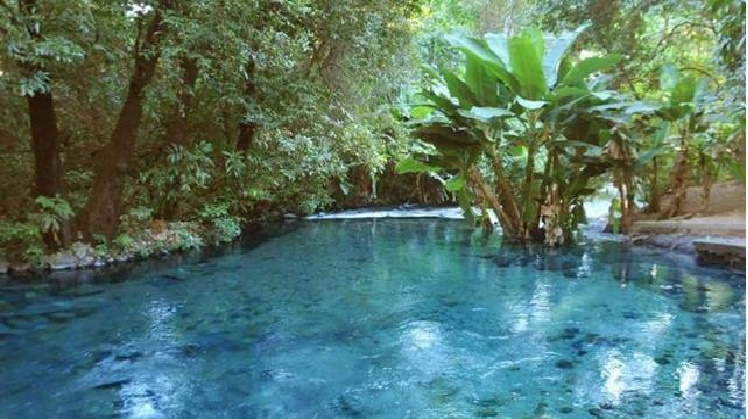
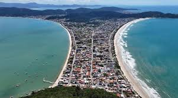

BYL Tourist - Sua viagem da melhor forma
Conheça nossos destinos

Salvador, Bahia
Capital cheia de história, Salvador encanta com suas praias paradisíacas, o famoso Pelourinho e uma cultura vibrante marcada pela música e culinária única. Um destino perfeito para quem busca beleza, tradição e diversão.
Ver mais
Tocantins
Conhecido por suas belezas naturais, Tocantins abriga o incrível Rio Azul, com águas cristalinas e paisagens encantadoras. Um destino perfeito para quem busca tranquilidade, contato com a natureza e experiências únicas.
Ver mais
Santa Catarina
Destino que combina praias deslumbrantes, montanhas e cidades encantadoras como Florianópolis. Santa Catarina é perfeita para quem busca paisagens variadas, clima agradável e uma mistura única de natureza e qualidade de vida.
Ver mais